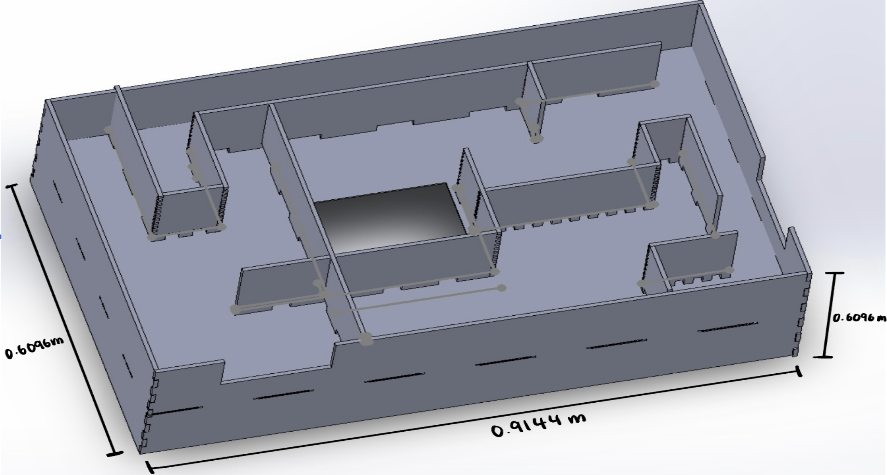
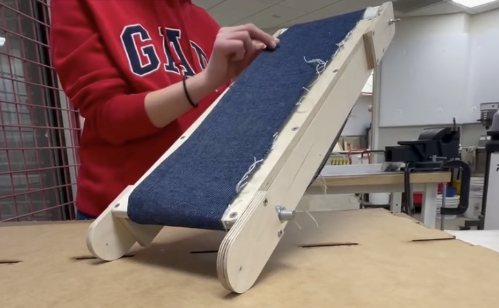
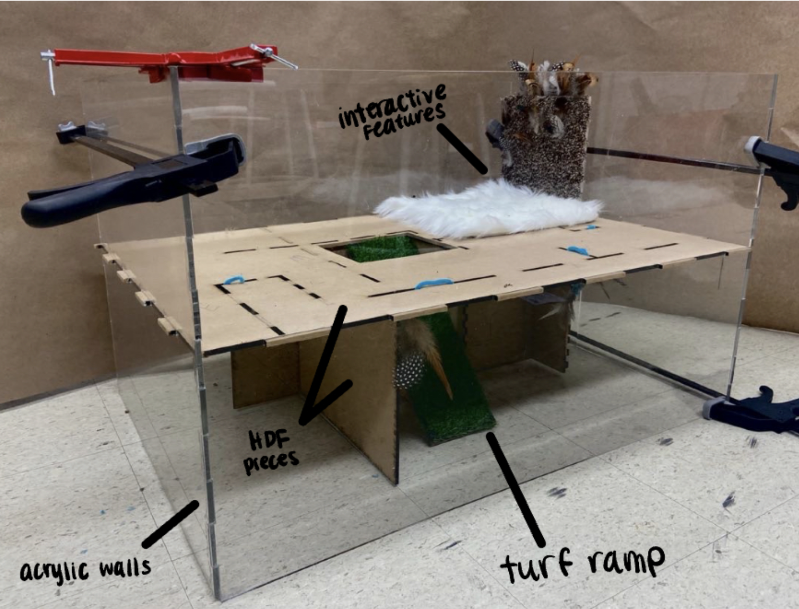

Exercising Equipment for a Skunk
Problem Statement:
Scratchy, the skunk of Henry Vilas Zoo, lacks daily exercise. It is difficult for her to maintain a proper physical form
for a skunk while living in a zoo. The design prioritizes portability and safety, so that the zookeepers can
easily move the product and ensure the safety of Scratchy.
3D Models:

Final Design:

This is a wood-based treadmill. The wood was free
because it was gathered from wasted materials. The belt that rotates along the surface is made out of denim, it was sewed to both ends.
It would able to freely rotate under the weight of a skunk as it has been tested using a group member's cat
.

This is the final picture of the maze. The maze was modeled using simple SolidWorks
features. The materials chosen for the final design were HDF, because of its cost-efficiency and longevity, and acrylic, because of its transparency. Each individual piece
was then produced using a lasercutter. Some feathers were hung in the structure because such decoration is liked by skunks. Acrylic walls were used to enclosed the strucutre
because it's easier for the zookeepers to keep track of the condition within the structure.
Design Process: